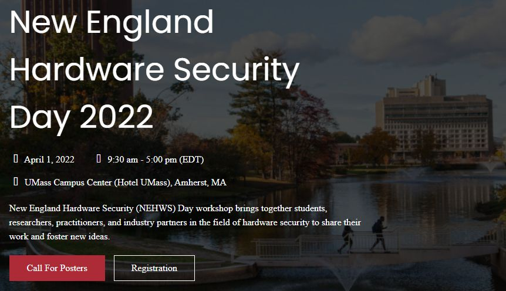
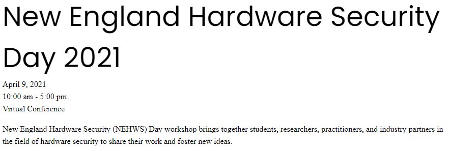
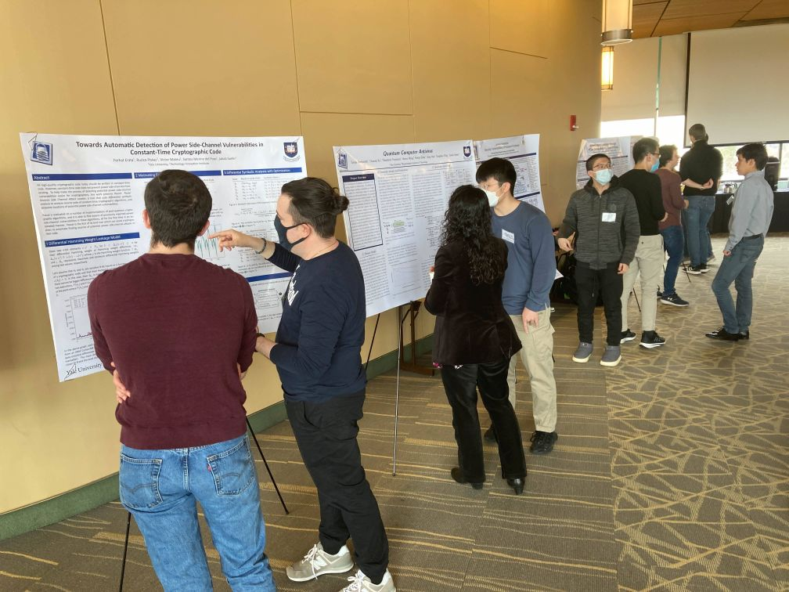
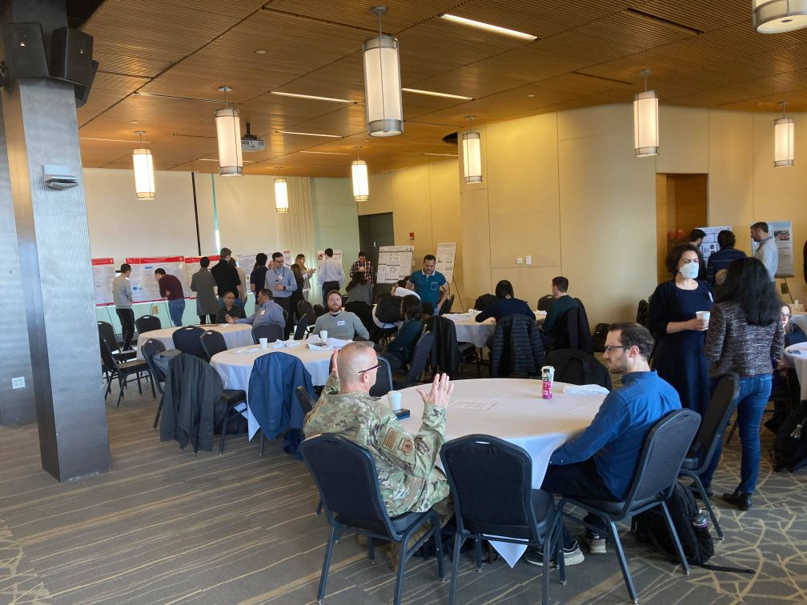
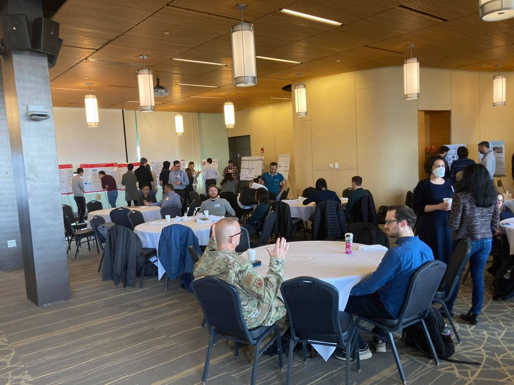

Former New England Hardware Security Day
- NEHWS 2022, 4/1/2022, University of Massachusetts, Amherst
- NEHWS 2021, 4/9/2021, Virtual
NEHWS 2022 @ University of Massachusetts, Amherst

The second NEHWS was organized on 1 April, 2022 at the Unversity of Masschusetts in Amherst.
| Presentation Topic | |
|---|---|
| 9:30 - 9:35 | Welcome Remarks (Dan Holcomb) |
| 9:35 - 10:30 | News from the NEHWS Community |
| - Fatemeh Ganji (WPI) | |
| - Dan Holcomb (Umass) | |
| - Yunsi Fei (NEU) | |
| - Jakub Szefer (Yale) | |
| 10:30 - 11:30 | Invited Keynote: Srinivas Devadas (MIT) |
| 11:30 - 1:00 | Lunch and Poster Session |
| 1:00 - 3:00 | Research Talks |
| - Mengjia Yan (MIT), “Security Analysis of Misunderstood | |
| Micro-architectural Side-Channel Attacks and Mitigations” | |
| - Jens-Peter Kaps (GMU), “Benchmarking FPGA Implementations | |
| of Candidates in the NIST LWC Standardization Process” | |
| - Colin O’Flynn (NewAE), “Hands on with Non-Invasive | |
| Hardware Security Tooling” | |
| 3:00 - 3:30 | Break |
| 3:30 - 4:30 | Panel Discussion: Driving Forces of Innovation in Security of |
| Microelectronics Supply Chain | |
| Moderator: Shahin Tajik (WPI) | |
| Panelists: | |
| - Peter Grossmann (Instrinsix) | |
| - Elke De Mulder (Rambus) | |
| - Richard Newell (Microchip Technology) | |
| - John Oakley (SRC) | |
| - Ingrid Verbauwhede (KUL) | |
| 4:30 - 5:00 | Networking and Closing |
Posters
-
A Cross-Platform Cache Timing Attack Framework via Deep Learning, Ruyi Ding, Ziyue Zhang, Xiang Zhang, Gongye Cheng, Yunsi Fei and A. Adam Ding,
-
Bitsliced NTT-based Polynomial Multiplication: A Generic Software Countermeasure against Fault Attacks, Richa Singh, Saad Islam, Berk Sunar and Patrick Schaumont
-
A Novel Differential-Bit Side-channel Power Attack on ECDH and Countermeasures, Tianhong Xu, Cheng Gongye and Yunsi Fei
-
ScatterVerif: Verification of Electronic Boards Using Reflection Response of Power Distribution Network, Tahoura Mosavirik, Fatemeh Ganji, Patrick Schaumont and Shahin Tajik
-
Garbled EDA: Privacy Preserving Electronic Design Automation, Mohammad Hashemi, Steffi Roy, Fatemeh Ganji and Domenic Forte
-
Side-channel analysis of ASCON, Dillibabu Shanmugam, Pantea Kiaei and Patrick Schaumont
-
Toward Realistic Backdoor Injection Attacks on DNNs using Rowhammer, M. Caner Tol, Saad Islam, Berk Sunar and Ziming Zhang
-
Quantum Computer Antivirus, Sanjay Deshpande, Chuanqi Xu, Theodoros Trochatos, Hanrui Wang, Ferhat Erata, Song Han, Yongshan Ding and Jakub Szefer
-
Leaky Frontends: Security Vulnerabilities in Processor Frontends, Bowen Huang, Shuwen Deng and Jakub Szefer
-
Towards Automatic Detection of Power Side-Channel Vulnerabilities in Constant-Time Cryptography, Ferhat Erata, Ruzica Piskac, Victor Mateu, Santos Merino del Pozo and Jakub Szefer
-
Improving the Performance and Security of Prior Work SSE-RV, Zhiming Zhang and Yunsi Fei
-
Precise Fault Injection to Enable DFIA for Attacking AES in Remote FPGAs, Xiang Li, Russell Tessier and Daniel Holcomb
-
Threat Modeling and Risk Analysis for Miniaturized Wireless Biomedical Devices, Vladimir Vakhter, Betul Soysal, Patrick Schaumont and Ulkuhan Guler
-
Remote Power Side-Channel Attacks against Hardware Accelerators in FPGA, Shayan Moini
-
Saidoyoki: Post-Silicon Side-Channel Evaluation, Ramazan Kaan Eren, Pantea Kiaei, Zhenyuan Liu and Patrick Schaumont
-
DAGguise: Mitigating Memory Timing Side Channels, Peter Deutsch, Yuheng Yang, Thomas Bourgeat, Jules Drean, Joel Emer and Mengjia Yan
-
Gate-Level Pre-Silicon Side-Channel Leakage Assessment, Pantea Kiaei, Yuan Yao, Zhenyuan Liu and Patrick Schaumont
-
Security from CAD Tools Perspective for Using Dynamic Partial Reconfiguration in on-premise and off-premise FPGAs, Sandeep Sunkavilli and Qiaoyan Yu
-
RansNet: An Anti-Ransomware Methodology based on Cache Monitoring and Deep Learning, Xiang Zhang, Ziyue Zhang, Ruyi Ding, Cheng Gongye, Adam Ding and Yunsi Fei
-
Root-cause Analysis of Power-based Side-channel Leakage in Lightweight Cryptography Candidates, Zhenyuan Liu and Patrick Schaumont
-
Security Risks and Challenges for Low-power Edge devices in Advanced Manufacturing, Mohammad Monjur and Qiaoyan Yu
-
There’s Always a Bigger Fish: A Case Study of a Misunderstood Timing Side Channel, Jack Cook, Jules Drean, Jonathan Behrens and Mengjia Yan
-
PCIe-Contention-Based Covert Channel in Cloud FPGAs, Shanquan Tian, Ilias Giechaskiel and Jakub Szefer
-
Signature Correction Attack on Dilithium Signature Scheme, Saad Islam, Koksal Mus, Richa Singh, Patrick Schaumont and Berk Sunar
NEHWS 2021 @ Virtual

The first NEHWS was organized on 9 April, 2021 as a Virtual Conference
| Presentation Topic | |
|---|---|
| 10:00 - 10:05 | Welcome Remarks |
| 10:05 - 11:00 | Invited Keynote: Wajdi Feghali (Intel) |
| 11:00 - 11:30 | Community Introduction |
| - Worcester Polytechnic Institute | |
| - University of Massachusetts at Amherst | |
| - Northeastern University | |
| - Yale University | |
| 11:30 - 12:30 | Research Talks |
| - Christof Paar (Max Planc Institute of Security and Privacy) | |
| - Dominic Rizzo (Google) | |
| - Jean-Pierre Seifert (Technical University of Berlin) | |
| 12:30 - 1:00 | Lunch Break |
| 1:00 - 2:00 | Poster Session |
| 2:00 - 3:00 | Panel Discussion: The Future of Hardware Security |
| Panelists: | |
| - Todd Austin (University of Michigan) | |
| - Kevin Bush (MIT Lincoln Lab) | |
| - Joe Chapman (MITRE) | |
| - Dave King (General Dynamics Mission Systems) | |
| - Lei Poo (Analog Devices) | |
| 3:00 - 4:00 | Networking and Closing |
Impressions


 
